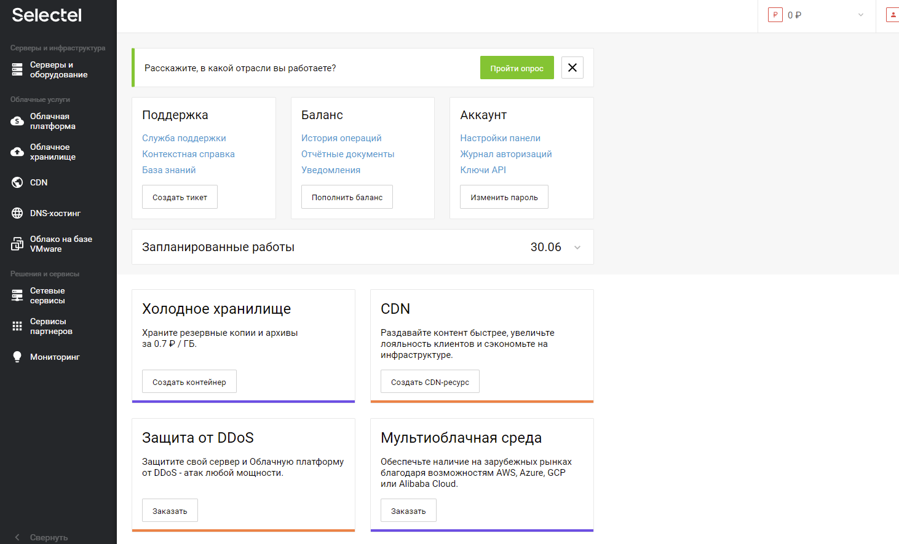
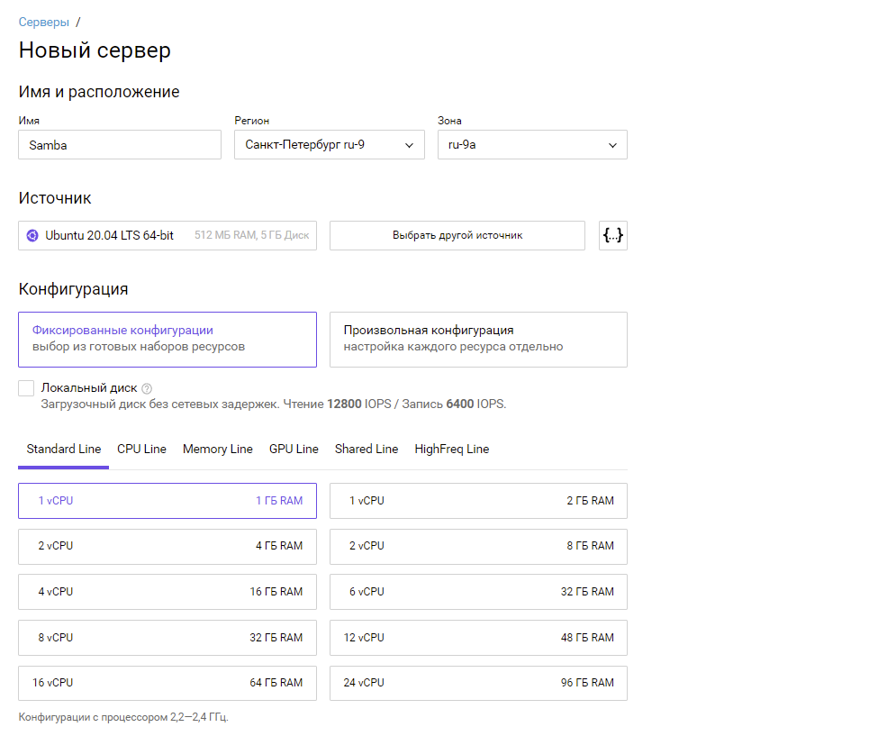
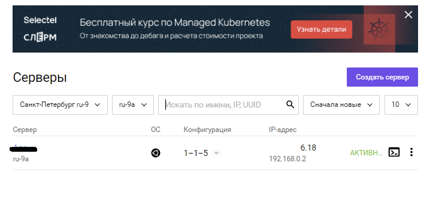
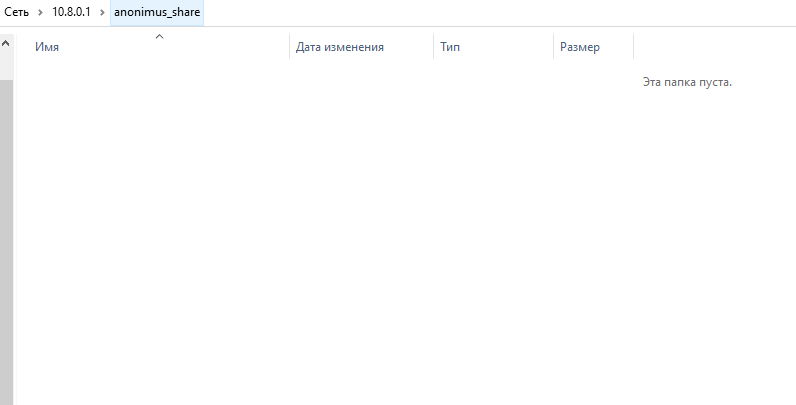
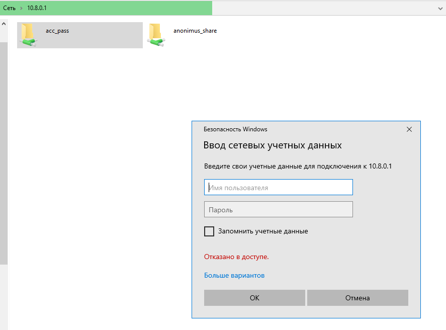
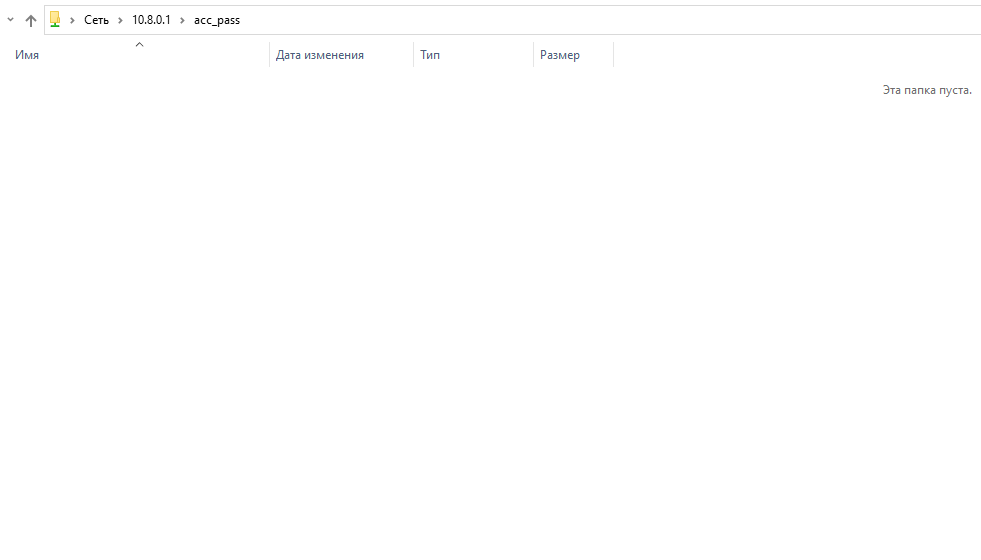
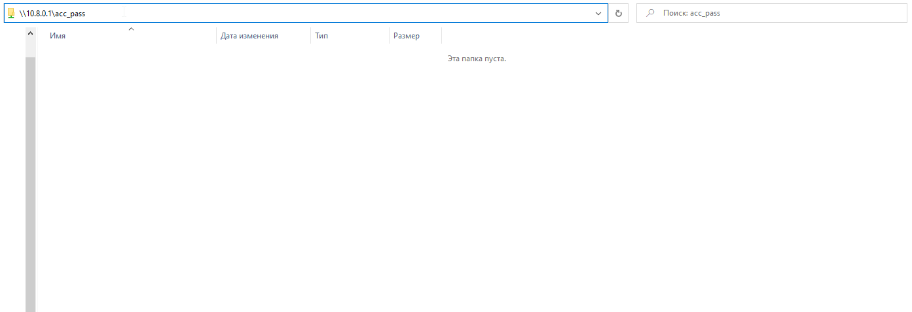
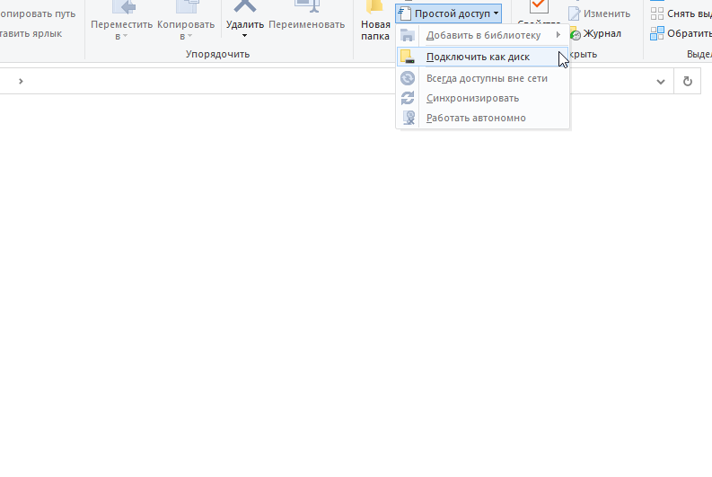
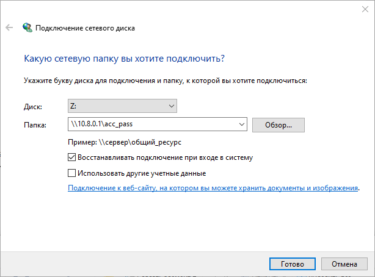

Установка и настройка Samba на Ubuntu 20.04
В статье рассказываем, как установить Samba на ОС Ubuntu 20.04, подключить к ресурсам и настроить сетевую корзину.
В этом мануале разберем последовательную установку и настройку программного обеспечения Samba на Ubuntu 20.04. Шаги данной инструкции выполним на облачной инфраструктуре Selectel.
Samba — стандартный набор программ для взаимодействия с Windows для Linux и Unix. Это свободное программное обеспечение, лицензированное по GNU General Public License. С 1992 года Samba предоставляет безопасные, стабильные и быстрые услуги по работе с файлами и печатью для всех клиентов, использующих протокол SMB/CIFS, таких как все версии DOS и Windows, OS/2, Linux и многие другие.
Samba — важный компонент для беспрепятственной интеграции Linux/Unix-серверов и настольных компьютеров в среду Active Directory. Она может функционировать как в качестве контроллера домена, так и в качестве обычного члена домена.
Говоря простыми словами, программное обеспечение Samba позволяет настроить файловое хранилище для совместного доступа с возможностью расширенной настройки прав доступа к директориям для групп, авторизованных пользователей, а также анонимный доступ без авторизации.
Подготовка виртуального сервера
Для этой инструкции используется виртуальная среда Selectel. Панель управления расположена по адресу: https://my.selectel.ru/.

В разделе Облачная платформа во вкладке Серверы создадим новый сервер.
Используем минимальную конфигурацию:

В настройках надо выбрать образ операционной системы для установки.
В данном случае это Ubuntu 20.04 LTS 64-bit из списка готовых конфигураций.
Оставим себе root-пароль и создадим сервер. После этого в панели управления появится IP-адрес сервера.

Подключимся к серверу по ssh и начнем настройку.
Создание пользователя
Создадим простого пользователя для дальнейшего тестирования подключения к настроенным директориям.
sudo useradd -p password selectel
Опция -p разрешит задать пароль пользователя сразу, password — созданный пароль, selectel — создаваемый пользователь.
Перед дальнейшей настройкой обновим репозитории. Сделать это можно командой:
sudo apt update -y
Настройка даты и времени
При первоначальной настройке файлового хранилища очень важно уделить внимание настройке даты и времени, чтобы избежать проблем в будущем при поиске необходимых файлов и директорий.
Для настройки даты и времени используется утилита chrony. Ее демона можно добавить в автозагрузку сервера и время всегда будет актуальным. Отправим в терминал команду установки пакета:
sudo apt install chrony -y
Вывод установки:
Reading package lists... Done
Building dependency tree
Reading state information... Done
The following packages will be REMOVED:
systemd-timesyncd
The following NEW packages will be installed:
chrony
0 upgraded, 1 newly installed, 1 to remove and 5 not upgraded.
Need to get 220 kB of archives.
After this operation, 287 kB of additional disk space will be used.
Get:1 http://mirror.selectel.ru/ubuntu focal-updates/main amd64 chrony amd64 3.5-6ubuntu6.2 [220 kB]
Fetched 220 kB in 0s (6903 kB/s)
dpkg: systemd-timesyncd: dependency problems, but removing anyway as you requested:
systemd depends on systemd-timesyncd | time-daemon; however:
Package systemd-timesyncd is to be removed.
Package time-daemon is not installed.
Package systemd-timesyncd which provides time-daemon is to be removed.
Package ntp which provides time-daemon is not installed.
systemd depends on systemd-timesyncd | time-daemon; however:
Package systemd-timesyncd is to be removed.
Package time-daemon is not installed.
Package systemd-timesyncd which provides time-daemon is to be removed.
Package ntp which provides time-daemon is not installed.
(Reading database ... 57118 files and directories currently installed.)
Removing systemd-timesyncd (245.4-4ubuntu3.13) ...
Selecting previously unselected package chrony.
(Reading database ... 57105 files and directories currently installed.)
Preparing to unpack .../chrony_3.5-6ubuntu6.2_amd64.deb ...
Unpacking chrony (3.5-6ubuntu6.2) ...
Setting up chrony (3.5-6ubuntu6.2) ...
Creating '_chrony' system user/group for the chronyd daemon…
Creating config file /etc/chrony/chrony.conf with new version
Creating config file /etc/chrony/chrony.keys with new version
Created symlink /etc/systemd/system/chronyd.service → /lib/systemd/system/chrony.service.
Created symlink /etc/systemd/system/multi-user.target.wants/chrony.service → /lib/systemd/system/chrony.service.
Processing triggers for man-db (2.9.1-1) ...
Processing triggers for dbus (1.12.16-2ubuntu2.1) ...
Processing triggers for systemd (245.4-4ubuntu3.13) ...
Добавим в автозагрузку сервера:
sudo systemctl enable chrony
Вывод:
Synchronizing state of chrony.service with SysV service script with /lib/systemd/systemd-sysv-install.
Executing: /lib/systemd/systemd-sysv-install enable chrony
Запустим утилиту:
sudo systemctl start chrony
Установим часовой пояс. Для данной инструкции используется Europe/Moscow. Команда:
sudo timedatectl set-timezone Europe/Moscow
Проверим дату и время командой:
date
Вывод:
Mon Dec 6 07:13:49 UTC 2021
Перейдем непосредственно к установке Samba на Ubuntu. Отправим в терминал команду:
sudo apt install samba -y
Вывод:
Reading package lists... Done
Building dependency tree
Reading state information... Done
The following additional packages will be installed:
libavahi-client3 libavahi-common-data libavahi-common3 libcups2 libldb2 libtalloc2 libtevent0 libwbclient0 python3-crypto python3-dnspython
python3-ldb python3-samba python3-talloc python3-tdb samba-common samba-common-bin samba-libs tdb-tools
Suggested packages:
cups-common bind9 bind9utils ctdb ldb-tools smbldap-tools winbind heimdal-clients python3-markdown
Recommended packages:
python3-gpg attr python3-markdown samba-dsdb-modules samba-vfs-modules
The following NEW packages will be installed:
libavahi-client3 libavahi-common-data libavahi-common3 libcups2 libldb2 libtalloc2 libtevent0 libwbclient0 python3-crypto python3-dnspython
python3-ldb python3-samba python3-talloc python3-tdb samba samba-common samba-common-bin samba-libs tdb-tools
0 upgraded, 19 newly installed, 0 to remove and 5 not upgraded.
Need to get 11.1 MB of archives.
After this operation, 71.6 MB of additional disk space will be used.
Get:1 http://mirror.selectel.ru/ubuntu focal-updates/main amd64 libtalloc2 amd64 2.3.1-0ubuntu0.20.04.1 [29.5 kB]
Get:2 http://mirror.selectel.ru/ubuntu focal-updates/main amd64 libtevent0 amd64 0.10.2-0ubuntu0.20.04.1 [35.6 kB]
Get:3 http://mirror.selectel.ru/ubuntu focal-updates/main amd64 libwbclient0 amd64 2:4.13.14+dfsg-0ubuntu0.20.04.2 [208 kB]
Get:4 http://mirror.selectel.ru/ubuntu focal/main amd64 python3-dnspython all 1.16.0-1build1 [89.1 kB]
Get:5 http://mirror.selectel.ru/ubuntu focal/main amd64 python3-crypto amd64 2.6.1-13ubuntu2 [237 kB]
Get:6 http://mirror.selectel.ru/ubuntu focal-updates/main amd64 libldb2 amd64 2:2.2.3-0ubuntu0.20.04.2 [140 kB]
Get:7 http://mirror.selectel.ru/ubuntu focal-updates/main amd64 python3-ldb amd64 2:2.2.3-0ubuntu0.20.04.2 [38.3 kB]
Get:8 http://mirror.selectel.ru/ubuntu focal-updates/main amd64 python3-tdb amd64 1.4.3-0ubuntu0.20.04.1 [13.4 kB]
Get:9 http://mirror.selectel.ru/ubuntu focal-updates/main amd64 libavahi-common-data amd64 0.7-4ubuntu7.1 [21.4 kB]
Get:10 http://mirror.selectel.ru/ubuntu focal-updates/main amd64 libavahi-common3 amd64 0.7-4ubuntu7.1 [21.7 kB]
Get:11 http://mirror.selectel.ru/ubuntu focal-updates/main amd64 libavahi-client3 amd64 0.7-4ubuntu7.1 [25.5 kB]
Get:12 http://mirror.selectel.ru/ubuntu focal-updates/main amd64 libcups2 amd64 2.3.1-9ubuntu1.1 [233 kB]
Get:13 http://mirror.selectel.ru/ubuntu focal-updates/main amd64 python3-talloc amd64 2.3.1-0ubuntu0.20.04.1 [12.2 kB]
Get:14 http://mirror.selectel.ru/ubuntu focal-updates/main amd64 samba-libs amd64 2:4.13.14+dfsg-0ubuntu0.20.04.2 [5753 kB]
Get:15 http://mirror.selectel.ru/ubuntu focal-updates/main amd64 python3-samba amd64 2:4.13.14+dfsg-0ubuntu0.20.04.2 [2575 kB]
Get:16 http://mirror.selectel.ru/ubuntu focal-updates/main amd64 samba-common all 2:4.13.14+dfsg-0ubuntu0.20.04.2 [68.3 kB]
Get:17 http://mirror.selectel.ru/ubuntu focal-updates/main amd64 samba-common-bin amd64 2:4.13.14+dfsg-0ubuntu0.20.04.2 [556 kB]
Get:18 http://mirror.selectel.ru/ubuntu focal-updates/main amd64 tdb-tools amd64 1.4.3-0ubuntu0.20.04.1 [24.9 kB]
Get:19 http://mirror.selectel.ru/ubuntu focal-updates/main amd64 samba amd64 2:4.13.14+dfsg-0ubuntu0.20.04.2 [1065 kB]
Fetched 11.1 MB in 0s (43.4 MB/s)
Preconfiguring packages ...
Selecting previously unselected package libtalloc2:amd64.
(Reading database ... 57147 files and directories currently installed.)
Preparing to unpack .../00-libtalloc2_2.3.1-0ubuntu0.20.04.1_amd64.deb ...
Unpacking libtalloc2:amd64 (2.3.1-0ubuntu0.20.04.1) ...
Selecting previously unselected package libtevent0:amd64.
Preparing to unpack .../01-libtevent0_0.10.2-0ubuntu0.20.04.1_amd64.deb ...
Unpacking libtevent0:amd64 (0.10.2-0ubuntu0.20.04.1) ...
Selecting previously unselected package libwbclient0:amd64.
Preparing to unpack .../02-libwbclient0_2%3a4.13.14+dfsg-0ubuntu0.20.04.2_amd64.deb ...
Unpacking libwbclient0:amd64 (2:4.13.14+dfsg-0ubuntu0.20.04.2) ...
Selecting previously unselected package python3-dnspython.
Preparing to unpack .../03-python3-dnspython_1.16.0-1build1_all.deb ...
Unpacking python3-dnspython (1.16.0-1build1) ...
Selecting previously unselected package python3-crypto.
Preparing to unpack .../04-python3-crypto_2.6.1-13ubuntu2_amd64.deb ...
Unpacking python3-crypto (2.6.1-13ubuntu2) ...
Selecting previously unselected package libldb2:amd64.
Preparing to unpack .../05-libldb2_2%3a2.2.3-0ubuntu0.20.04.2_amd64.deb ...
Unpacking libldb2:amd64 (2:2.2.3-0ubuntu0.20.04.2) ...
Selecting previously unselected package python3-ldb.
Preparing to unpack .../06-python3-ldb_2%3a2.2.3-0ubuntu0.20.04.2_amd64.deb ...
Unpacking python3-ldb (2:2.2.3-0ubuntu0.20.04.2) ...
Selecting previously unselected package python3-tdb.
Preparing to unpack .../07-python3-tdb_1.4.3-0ubuntu0.20.04.1_amd64.deb ...
Unpacking python3-tdb (1.4.3-0ubuntu0.20.04.1) ...
Selecting previously unselected package libavahi-common-data:amd64.
Preparing to unpack .../08-libavahi-common-data_0.7-4ubuntu7.1_amd64.deb ...
Unpacking libavahi-common-data:amd64 (0.7-4ubuntu7.1) ...
Selecting previously unselected package libavahi-common3:amd64.
Preparing to unpack .../09-libavahi-common3_0.7-4ubuntu7.1_amd64.deb ...
Unpacking libavahi-common3:amd64 (0.7-4ubuntu7.1) ...
Selecting previously unselected package libavahi-client3:amd64.
Preparing to unpack .../10-libavahi-client3_0.7-4ubuntu7.1_amd64.deb ...
Unpacking libavahi-client3:amd64 (0.7-4ubuntu7.1) ...
Selecting previously unselected package libcups2:amd64.
Preparing to unpack .../11-libcups2_2.3.1-9ubuntu1.1_amd64.deb ...
Unpacking libcups2:amd64 (2.3.1-9ubuntu1.1) ...
Selecting previously unselected package python3-talloc:amd64.
Preparing to unpack .../12-python3-talloc_2.3.1-0ubuntu0.20.04.1_amd64.deb ...
Unpacking python3-talloc:amd64 (2.3.1-0ubuntu0.20.04.1) ...
Selecting previously unselected package samba-libs:amd64.
Preparing to unpack .../13-samba-libs_2%3a4.13.14+dfsg-0ubuntu0.20.04.2_amd64.deb ...
Unpacking samba-libs:amd64 (2:4.13.14+dfsg-0ubuntu0.20.04.2) ...
Selecting previously unselected package python3-samba.
Preparing to unpack .../14-python3-samba_2%3a4.13.14+dfsg-0ubuntu0.20.04.2_amd64.deb ...
Unpacking python3-samba (2:4.13.14+dfsg-0ubuntu0.20.04.2) ...
Selecting previously unselected package samba-common.
Preparing to unpack .../15-samba-common_2%3a4.13.14+dfsg-0ubuntu0.20.04.2_all.deb ...
Unpacking samba-common (2:4.13.14+dfsg-0ubuntu0.20.04.2) ...
Selecting previously unselected package samba-common-bin.
Preparing to unpack .../16-samba-common-bin_2%3a4.13.14+dfsg-0ubuntu0.20.04.2_amd64.deb ...
Unpacking samba-common-bin (2:4.13.14+dfsg-0ubuntu0.20.04.2) ...
Selecting previously unselected package tdb-tools.
Preparing to unpack .../17-tdb-tools_1.4.3-0ubuntu0.20.04.1_amd64.deb ...
Unpacking tdb-tools (1.4.3-0ubuntu0.20.04.1) ...
Selecting previously unselected package samba.
Preparing to unpack .../18-samba_2%3a4.13.14+dfsg-0ubuntu0.20.04.2_amd64.deb ...
Unpacking samba (2:4.13.14+dfsg-0ubuntu0.20.04.2) ...
Setting up samba-common (2:4.13.14+dfsg-0ubuntu0.20.04.2) ...
Creating config file /etc/samba/smb.conf with new version
Setting up libtalloc2:amd64 (2.3.1-0ubuntu0.20.04.1) ...
Setting up python3-tdb (1.4.3-0ubuntu0.20.04.1) ...
Setting up libtevent0:amd64 (0.10.2-0ubuntu0.20.04.1) ...
Setting up libavahi-common-data:amd64 (0.7-4ubuntu7.1) ...
Setting up tdb-tools (1.4.3-0ubuntu0.20.04.1) ...
update-alternatives: using /usr/bin/tdbbackup.tdbtools to provide /usr/bin/tdbbackup (tdbbackup) in auto mode
Setting up python3-dnspython (1.16.0-1build1) ...
Setting up python3-crypto (2.6.1-13ubuntu2) ...
Setting up libldb2:amd64 (2:2.2.3-0ubuntu0.20.04.2) ...
Setting up python3-talloc:amd64 (2.3.1-0ubuntu0.20.04.1) ...
Setting up libavahi-common3:amd64 (0.7-4ubuntu7.1) ...
Setting up libwbclient0:amd64 (2:4.13.14+dfsg-0ubuntu0.20.04.2) ...
Setting up python3-ldb (2:2.2.3-0ubuntu0.20.04.2) ...
Setting up libavahi-client3:amd64 (0.7-4ubuntu7.1) ...
Setting up libcups2:amd64 (2.3.1-9ubuntu1.1) ...
Setting up samba-libs:amd64 (2:4.13.14+dfsg-0ubuntu0.20.04.2) ...
Setting up python3-samba (2:4.13.14+dfsg-0ubuntu0.20.04.2) ...
Setting up samba-common-bin (2:4.13.14+dfsg-0ubuntu0.20.04.2) ...
Checking smb.conf with testparm
Load smb config files from /etc/samba/smb.conf
Loaded services file OK.
Weak crypto is allowed
Server role: ROLE_STANDALONE
Done
Setting up samba (2:4.13.14+dfsg-0ubuntu0.20.04.2) ...
Adding group `sambashare' (GID 121) ...
Done.
Samba is not being run as an AD Domain Controller: Masking samba-ad-dc.service
Please ignore the following error about deb-systemd-helper not finding those services.
(samba-ad-dc.service masked)
Created symlink /etc/systemd/system/multi-user.target.wants/nmbd.service → /lib/systemd/system/nmbd.service.
Failed to preset unit: Unit file /etc/systemd/system/samba-ad-dc.service is masked.
/usr/bin/deb-systemd-helper: error: systemctl preset failed on samba-ad-dc.service: No such file or directory
Created symlink /etc/systemd/system/multi-user.target.wants/smbd.service → /lib/systemd/system/smbd.service.
samba-ad-dc.service is a disabled or a static unit, not starting it.
Processing triggers for ufw (0.36-6ubuntu1) ...
Rules updated for profile 'Squid'
Skipped reloading firewall
Processing triggers for systemd (245.4-4ubuntu3.13) ...
Processing triggers for man-db (2.9.1-1) ...
Processing triggers for libc-bin (2.31-0ubuntu9.2) ...
Демон или сервис Samba называется smbd. Под таким именем и будем к нему обращаться.
Добавим сервис smbd в автозапуск:
sudo systemctl enable smbd
Запустим:
sudo systemctl start smbd
Проверим текущий статус:
sudo systemctl status smbd
Далее перечислим оставшиеся команды управления сервисом smbd. Они могут потребоваться в дальнейшем в процессе эксплуатации Samba.
Остановить сервис:
sudo systemctl stop smbd
Перезапуск демона:
sudo systemctl restart smbd
Убрать из автозапуска:
sudo systemctl disable smbd
Перечитать конфигурацию:
sudo systemctl reload smbd
Результат проверки статуса:
● smbd.service - Samba SMB Daemon
Loaded: loaded (/lib/systemd/system/smbd.service; enabled; vendor preset: enabled)
Active: active (running) since Mon 2021-12-06 09:50:18 UTC; 26s ago
Docs: man:smbd(8)
man:samba(7)
man:smb.conf(5)
Main PID: 83137 (smbd)
Status: "smbd: ready to serve connections..."
Tasks: 4 (limit: 1105)
Memory: 7.2M
CGroup: /system.slice/smbd.service
├─83137 /usr/sbin/smbd --foreground --no-process-group
├─83139 /usr/sbin/smbd --foreground --no-process-group
├─83140 /usr/sbin/smbd --foreground --no-process-group
└─83141 /usr/sbin/smbd --foreground --no-process-group
Dec 06 09:50:18 apachi systemd[1]: Starting Samba SMB Daemon...
Dec 06 09:50:18 apachi systemd[1]: Started Samba SMB Daemon.
Dec 06 09:50:28 apachi systemd[1]: Reloading Samba SMB Daemon.
Dec 06 09:50:28 apachi systemd[1]: Reloaded Samba SMB Daemon.
Если в настраиваемой системе включен брандмауэр ufw, необходимо добавить разрешающее правило для Samba:
sudo ufw allow Samba
или:
sudo ufw allow 445
sudo ufw allow 137
sudo ufw allow 138
sudo ufw allow 139
В каждом правиле указан порт из диапазона, в котором работает Samba.
Предварительная подготовка доступа
В этой инструкции используется удаленный сервер, расположенный в интернете. Открывать прямой доступ по IP-адресу к ресурсам в таком случае нельзя. Поэтому перед дальнейшей настройкой будет организован VPN-туннель. Настраивать VPN для удаленного доступа в локальной сети не потребуется. Настройку мы произвели, следуя этой инструкции.
После получения доступа к удаленному серверу с использованием VPN-туннеля, сервер имеет адрес 10.8.0.1
Дальнейшие действия будут производиться с использованием этого адреса.
Конфигурационный файл Samba расположен по следующему пути:
/etc/samba/smb.conf
Лучше скопировать файл конфигурации по умолчанию, чтобы всегда оставлять себе возможность откатиться до дефолтных настроек Samba на Ubuntu.
Копируем командой:
sudo cp /etc/samba/smb.conf /etc/samba/res_smb.conf
Далее оставим в файле конфигурации только те строки, которые используются в работе и не являются комментарием.
grep -v '^ *#\|^ *$' /etc/samba/smb.conf | sudo tee /etc/samba/smb.conf
На выходе получаем файл конфигурации без комментариев и неиспользуемых директив. Вот так он выглядит:
[global]
workgroup = WORKGROUP
server string = %h server (Samba, Ubuntu)
log file = /var/log/samba/log.%m
max log size = 1000
logging = file
panic action = /usr/share/samba/panic-action %d
server role = standalone server
obey pam restrictions = yes
unix password sync = yes
passwd program = /usr/bin/passwd %u
passwd chat = *Enter\snew\s*\spassword:* %n\n *Retype\snew\s*\spassword:* %n\n *password\supdated\ssuccessfully* .
pam password change = yes
map to guest = bad user
usershare allow guests = yes
[printers]
comment = All Printers
browseable = no
path = /var/spool/samba
printable = yes
guest ok = no
read only = yes
create mask = 0700
[print$]
comment = Printer Drivers
path = /var/lib/samba/printers
browseable = yes
read only = yes
guest ok = no
После сохранения конфигурации рекомендуется проверить ее работоспособность с помощью команды:
testparm
Вывод:
Load smb config files from /etc/samba/smb.conf
Loaded services file OK.
Weak crypto is allowed
Server role: ROLE_STANDALONE
Press enter to see a dump of your service definitions
# Global parameters
[global]
log file = /var/log/samba/log.%m
logging = file
map to guest = Bad User
max log size = 1000
obey pam restrictions = Yes
pam password change = Yes
panic action = /usr/share/samba/panic-action %d
passwd chat = *Enter\snew\s*\spassword:* %n\n *Retype\snew\s*\spassword:* %n\n *password\supdated\ssuccessfully* .
passwd program = /usr/bin/passwd %u
server role = standalone server
server string = %h server (Samba, Ubuntu)
unix password sync = Yes
usershare allow guests = Yes
idmap config * : backend = tdb
[printers]
browseable = No
comment = All Printers
create mask = 0700
path = /var/spool/samba
printable = Yes
[print$]
comment = Printer Drivers
path = /var/lib/samba/printers
Настройка анонимного доступа к директории
Для множества задач самым оптимальным и простым решением является настройка анонимного доступа к ресурсу. Это значит, что клиент имеет возможность обратиться к ресурсу на сервере без авторизации. Например, можно создать директорию с общим доступом, в которой хранится информация, которой не требуется безопасность.
Важно: данный способ используется очень редко. Это крайне небезопасно оставлять ресурс в таком состоянии. Обычно это делается для маленькой soho-сети в самых крайних случаях.
Создадим директорию, к которой будет предоставлен доступ:
sudo mkdir /var/anonimus_share
И добавим директории полные права для всех:
sudo chmod 775 /var/anonimus_share
Директория var использована как пример, в реальных задачах может быть предоставлен доступ к папке с логами, чтобы их изучить без подключения к серверу, или создание папки с общим доступом для обмена файлами. Такие права также назначены в ознакомительных целях.
Следующим шагом будут внесены изменения в директивы конфигурационного файла, в данной инструкции для этих целей использован текстовый редактор nano.
sudo nano /etc/samba/smb.conf
Добавим в файл следующий директивы:
[anonimus_share]
comment = Directory anonimus
path = /var/anonimus_share
public = yes
writable = yes
read only = no
guest ok = yes
create mask = 0775
directory mask = 0775
force create mode = 0775
force directory mode = 0775
Рассмотрим более подробно:
[anonimus_share] 一 имя ресурса, отображаемое клиенту при подключении;
comment = Directory anonimus 一 комментарий;
path = /var/anonimus_share 一 директория, к которой предоставляем доступ;
public = yes 一 доступ на чтение всем авторизованным пользователям, также гостевым;
writable = yes 一 право записи в сетевой ресурс;
read only = no 一 право на чтение, при значении директивы no 一 все пользователи получают право на создание директорий и файлов;
guest ok = yes 一 доступ гостевой учетной записи;
Эти директивы задают права доступа, назначаемые при создании новой директории или файла.
Конфигурационный файл теперь выглядит следующим образом:
workgroup = WORKGROUP
server string = %h server (Samba, Ubuntu)
log file = /var/log/samba/log.%m
max log size = 1000
logging = file
panic action = /usr/share/samba/panic-action %d
server role = standalone server
obey pam restrictions = yes
unix password sync = yes
passwd program = /usr/bin/passwd %u
passwd chat = *Enter\snew\s*\spassword:* %n\n *Retype\snew\s*\spassword:* %n\n *password\supdated\ssuccessfully* .
pam password change = yes
map to guest = bad user
usershare allow guests = yes
[printers]
comment = All Printers
browseable = no
path = /var/spool/samba
printable = yes
guest ok = no
read only = yes
create mask = 0700
[print$]
comment = Printer Drivers
path = /var/lib/samba/printers
browseable = yes
read only = yes
guest ok = no
[anonimus_share]
comment = Directory anonimus
path = /var/anonimus_share
public = yes
writable = yes
read only = no
guest ok = yes
create mask = 0775
directory mask = 0775
force create mode = 0775
force directory mode = 0775
После внесения изменений перезапускаем демона Samba:
sudo systemctl restart smbd
Произведем проверку подключения к ресурсу с операционной системы Windows.

Доступ к созданной директории есть.
Настройка доступа по учетным данным пользователя
Следующим этапом станет настройка доступа к директории по комбинации логин/пароль.
Для начала создадим директорию, которая станет тестовой, и назначим ей полный права:
sudo mkdir /var/acc_pass | sudo chmod 777 /var/acc_pass
Внесем изменения в файл конфигурации:
sudo nano /etc/samba/smb.conf
Добавим следующий блок директив:
[acc_pass]
comment = acc_pass
path = /var/acc_pass
public = no
writable = yes
read only = no
guest ok = no
create mask = 0775
directory mask = 0775
force create mode = 0775
force directory mode = 0775
Большая часть указанных здесь настроек разобраны в предыдущем блоке.
Остановимся только на новых:
path = /var/acc_pass 一 путь до директории;
public = no 一 запрет на публичный доступ к папке;
guest ok = no 一 запрет гостевого подключения.
Добавим пользователя Samba:
sudo smbpasswd -a selectel
Проверим подключение к директории:

При попытке подключения происходит запрос комбинации логин/пароль. Вводим.
После успешной авторизации происходит получение доступа к директории:

Настройка доступа для пользователей и групп
Следующим этапом разберем доступ к директории для определенных пользователей и групп.
Создадим директорию и назначим ей полные права:
sudo mkdir /var/acc_gr_and_user | sudo chmod 777 /var/acc_gr_and_user
Откроем файл конфигурации и добавим в него следующий блок директив:
[acc_gr_and_user]
comment = acc_gr_and_user
path = /var/acc_gr_and_user
public = no
writable = no
read only = yes
guest ok = no
valid users = vlan48, selectel, @groupe1
write list = selectel
create mask = 0775
directory mask = 0775
force create mode = 0775
force directory mode = 0775
inherit owner = yes
Разберем директивы:
[acc_gr_and_user] 一 имя ресурса, отображаемое клиенту при подключении;
comment = acc_gr_and_user 一 комментарий;
path = /var/acc_gr_and_user 一 директория, к которой предоставляем доступ;
public = no 一 запрет на публичный доступ к папке;
writable = no и read only = yes 一 разрешение на запись мы добавим для пользователей, перечисленных в директиве write list, а для остальных оставим с запрет на запись, разрешив только чтение;
guest ok = no 一 доступ гостевой учетной записи;
valid users = vlan48, selectel, @groupe1 一 пользователи и группы, которые имеют доступ к директории, где vlan48, selectel 一пользователи, а @groupe1 一группа пользователей.
write list = selectel 一 пользователи, которым разрешена запись в директории;
Эти 4 директивы задают права доступа назначаемые при создании новой директории или файла.
inherit owner = yes 一 директива включает наследование владельца во время создания директорий и файлов.
Сохраняем файл, перезапускаем демона Samba:
sudo systemctl restart smbd
Для подключения к созданному ресурсу из операционной системы Windows используется проводник. Быстро открыть его можно, применив комбинацию клавиш Ctrl+E. Вводим необходимый путь в адресную строку проводника.

Путь в системах Windows пишется через обратный слеш, путь к сетевому ресурсу 一 через двойной обратный слеш. Можно также подключать ресурс как диск, если это не противоречит вашим правилам безопасности. В таком случае при включении рабочей станции не требуется каждый раз устанавливать соединение с ресурсом.
Для выполнения этой процедуры в проводнике выберем вкладку Простой доступ, подключить как диск.

В открывшемся окне настроим букву для обозначения диска в системе и путь к ресурсу. Если учетная запись для авторизации в Samba отличается от учетной записи, под которой работает пользователь, можно использовать чекбокс Использовать другие учетные данные.

Теперь ресурс станет отображаться как диск при включении компьютера.
Linux
Подключение из операционных систем Linux-семейства производится с использованием набора утилит cifs. Установим cifs-утилиты на Ubuntu.
sudo apt install cifs-utils -y
Вывод установки:
Reading package lists... Done
Building dependency tree
Reading state information... Done
Suggested packages:
keyutils smbclient winbind
The following NEW packages will be installed:
cifs-utils
0 upgraded, 1 newly installed, 0 to remove and 2 not upgraded.
Need to get 82.5 kB of archives.
After this operation, 306 kB of additional disk space will be used.
Get:1 http://mirror.selectel.ru/ubuntu focal-updates/main amd64 cifs-utils amd64 2:6.9-1ubuntu0.1 [82.5 kB]
Fetched 82.5 kB in 0s (2439 kB/s)
Selecting previously unselected package cifs-utils.
(Reading database ... 45851 files and directories currently installed.)
Preparing to unpack .../cifs-utils_2%3a6.9-1ubuntu0.1_amd64.deb ...
Unpacking cifs-utils (2:6.9-1ubuntu0.1) ...
Setting up cifs-utils (2:6.9-1ubuntu0.1) ...
update-alternatives: using /usr/lib/x86_64-linux-gnu/cifs-utils/idmapwb.so to provide /etc/cifs-utils/idmap-plugin (idmap-plugin) in auto mode
Processing triggers for man-db (2.9.1-1) ...
Монтирование ресурса выглядит так:
mount.cifs {ресурс} {путь к директории в которую монтируем } {-o опции}
Как пример рассмотрим подключение к директории anonimus_share, расположенной на ресурсе 10.8.0.1 в директорию mnt:
mount.cifs //10.8.0.1/anonimus_share /mnt
Автоматическое монтирование директории происходит с использованием файла fstab. Для начала создадим дополнительный файл с учетными данными пользователя для авторизации. Оправданно будет создать этот файл в директории root.
sudo nano /root/.smbselus
Внесем в файл следующие директивы:
username=selectel
password=uspass
Сохраняем и переходим к конфигурационному файлу fstab.
sudo nano /etc/fstab
Добавляем в него следующий блок инструкций:
//10.8.0.1/acc_gr_and_user /mnt cifs user,rw,credentials=/root/.smbselus 0 0
Конкретизируем каждый пункт:
//10.8.0.1/acc_gr_and_user 一 директория, которую необходимо смонтировать;
/mnt 一 директория, в которую необходимо смонтировать;
cifs user 一 разрешает монтировать любому пользователю;
rw 一 предоставляет права на чтение и запись;
credentials=/root/.smbselus 一 файл с учетными данными пользователя;
0 используется утилитой dump 0 一 выключен;
0 используется утилитой fsck 0 一 выключен.
В некоторых случаях требуется добавить директиву domain в файл .smbselus.
Для более тонкой и детальной настройки всегда можно обратиться к документации продукта.
По умолчанию файлы из директории удаляются совсем. При определенных условиях необходимо иметь возможность восстановить эти файлы. В Samba данная возможность реализована с использованием сетевой корзины. Алгоритм работы следующий: настраивается скрытый каталог, в который при удалении перемещаются файлы.
Первым этапом создадим директорию для корзины и назначим ей права:
sudo mkdir /var/recycle | sudo chmod 777 /var/recycle
Внесем блок директив в конфигурационный файл:
sudo nano /etc/samba/smb.conf
[Recycle]
comment = rec_dir
path = /var/recycle
public = yes
browseable = yes
writable = yes
vfs objects = recycle
recycle:repository = .recycle/%U
recycle:keeptree = Yes
recycle:touch = Yes
recycle:versions = Yes
recycle:maxsize = 0
recycle:exclude = *.tmp, ~$*
recycle:exclude_dir = /tmp
Значения директив:
[Recycle] 一 имя ресурса, отображаемое клиенту при подключении;
comment = rec_dir 一 комментарий;
path = /var/recycle 一 директория, в которой размещена сетевая корзина.
public = yes 一 доступ на чтение всем авторизованным пользователям, также гостевым;
browseable = yes 一 параметр устанавливает, будет ли общий ресурс отображаться в списке доступных общих ресурсов в сетевом окружении и в списке просмотра;
writable = yes 一 право записи в сетевой ресурс;
vfs objects = recycle 一 использование подсистемы recycle;
recycle:repository = .recycle/%U 一 место хранения удаленных объектов. В этой директиве настроено попадание удаленных файлов в каталог с именем пользователя, который создается автоматически в директории .recycle;
recycle:keeptree = Yes 一 удаление с сохранением дерева каталогов;
recycle:touch = Yes 一 изменение даты при перемещении файла в сетевую корзину;
recycle:versions = Yes 一 добавление номера версии при удалении файлов с одинаковыми именами;
recycle:maxsize = 0 一 параметр отвечает за максимальный размер файла, который может быть перемещен в корзину. При текущем значении возможно переместить файл любого размера;
recycle:exclude = *.tmp, ~$* 一 исключение файлов заданного типа;
recycle:exclude_dir = /tmp 一 исключение директории заданного типа.
Мы разобрали процесс установки и настройки программного обеспечения Samba. В данном мануале также указаны ресурсы, на которых можно более детально увидеть значение необходимых директив.